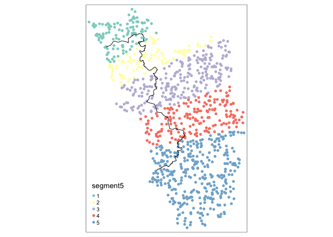
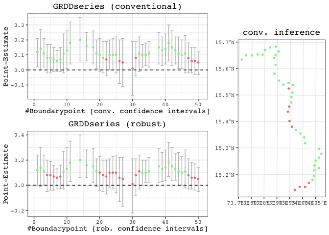

SpatialRDD
This repository hosts the code underlying the R package SpatialRDD. The workhorse functions in a nutshell are:
assign_treated()border_segment()discretise_border()spatialrd()plotspatialrd()printspatialrd()shift_border()cutoff2polygon()
SpatialRDD is the first (geo-)statistical package that unifies the geographic tasks needed for spatial RDDs with all potential parametric and non-parametric estimation techniques that have been put forward [see @Lehner2023a]. It makes it easy to understand critical assumptions regarding bandwidths, sparse border points, and border segment fixed effects. The package can estimate heterogeneous treatment effects alongside an RD cutoff. Moreover it provides powerful spatial functions to carry out placebo exercises (move borders and reassign (placebo) treatment status). These functionalities are also useful for different empirical identification strategies that rely on flexibly changing geographic boundaries.
For full guidance check out the different vignettes on the package website or with
vignette(spatialrdd_vignette)vignette(shifting_borders)
in the R console. The functions that are presented in the latter are potentially useful for other research designs that rely on (randomly) shifting (many) borders.
Installation
# From CRAN
install.packages("SpatialRDD")
# For the latest stable development version
install.packages("devtools")
devtools::install_github("axlehner/SpatialRDD") # add build_vignettes = TRUE if you want to have access to them via R, otherwise just look at the .Rmd on github in \vignettes What you need to run you own spatial RD with SpatialRDD:
- An RD boundary as a single line (the simplest way is to cut this by hand in e.g. ArcGIS or QGIS by just splitting a line off a polygon for example - also make sure to merge all features together in case there are multiple left, this will be important and prevent annoying troubles later on)
- The data frame containing the columns with x- and y-coordinates. Read in with
read.csv()or withreadstata13::read.dta13(). Make them an sf object withst_as_sf(data, coords = c("x", "y"), crs = 4326)if you have longitude/latitude as coordinates (which is reflected by the 4326 EPSG). If this is the case usest_transform()on all your objects into a local UTM projection (not necessary but recommended for several reasons). Note: In case your data comes as a shapefile/geopackage/etc. directly, just read it in withst_read("path/to/file.shp"). If these are polygons it is advised to work with the centroids straightaway (extract withst_centroid()). If you need zonal statistics (on elevation/ruggednes etc.) for e.g. checking identifying assumptions, do these before converting to centroids. - Ideally also a polygon that covers the treated areas (this could be created within the package with
cutoff2polygonthough)
You could verify the “geographic validity” of your objects with e.g. mapview::mapview().
Quick Guide
Adding border segment for transparent fixed effect category creation (for the non-parametric specification that is just OLS with lm() or lfe::felm()):
points_samp.sf$segment5 <- border_segment(points_samp.sf, cut_off, 5)
tm_shape(points_samp.sf) + tm_dots("segment5", size = 0.1) + tm_shape(cut_off) + tm_lines()
Create points alongside border and run GRD to explore heterogeneity:
borderpoints.sf <- discretise_border(cutoff = cut_off, n = 50)
results <- spatialrd(y = "education", data = points_samp.sf, cutoff.points = borderpoints.sf, treated = "treated", minobs = 10)
plotspatialrd(results, map = T)